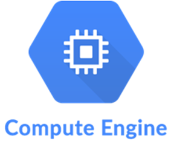
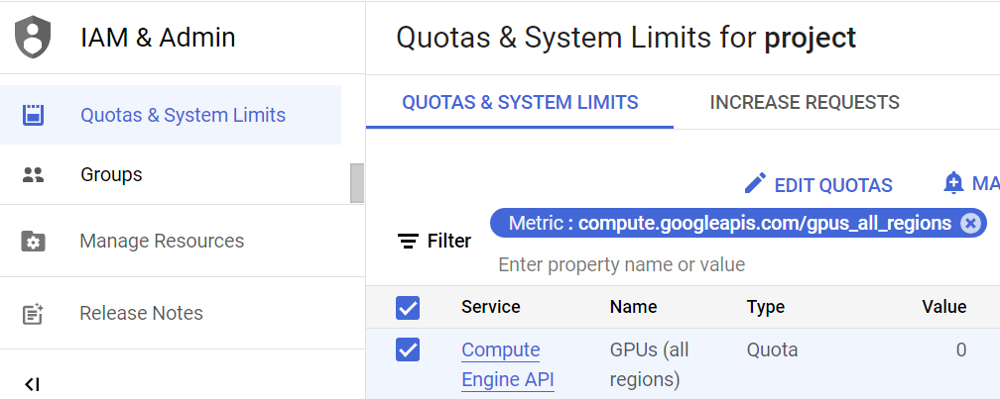
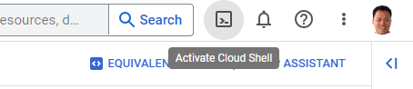
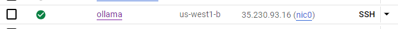
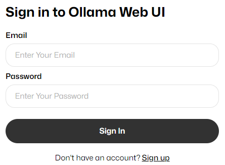
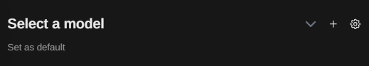
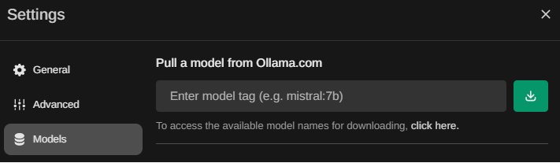
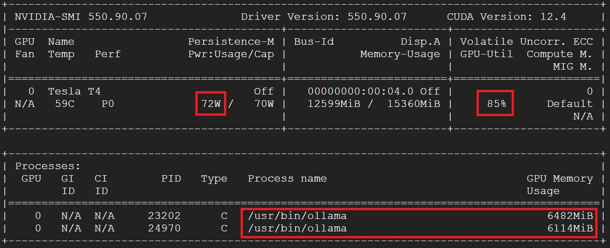
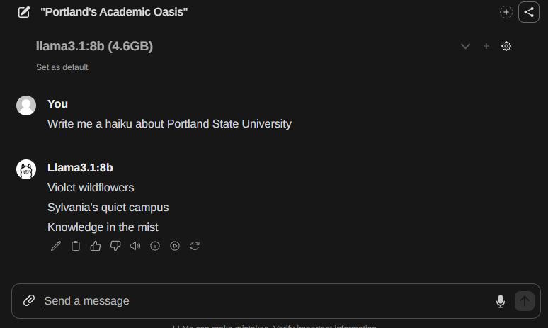

Ollama is a framework that makes it easy to run open-source large language models such as Mistral and Llama. Because we are running the model ourselves, it requires us to deploy a machine with a GPU attached.
By default, GCP projects have quotas on resources that disable GPU usage. Visit the Google Cloud Platform console and then navigate to the IAM part of the platform "Quotas and System Limits" section of IAM. A direct link to it is here. Filter on "gpus_all_regions" and edit the quota to request a change to "1". It will ask you to submit a quota request. Follow the steps and you will receive an email. The email will say it will take up to 2 business days to process your request, but you should receive a follow up email within a few minutes. We'll be using an NVIDIA T4 GPU. Check that its quota is set to "1" by searching for "nvidia_t4_gpus"

Visit the Google Cloud Platform console and bring up Cloud Shell.

Create a firewall rule with a tag ollama that allows port 80 (for the web interface)
and port 11434 (for the API interface) to the Ollama server.
gcloud compute firewall-rules create allow-ollama \
--allow=tcp:80,tcp:11434 --target-tags=ollamaThen, launch a Compute Engine VM with the command below. To reduce costs, we'll run
Ollama on a pre-emptible Compute Engine VM. The command attaches an NVIDIA GPU and runs a Linux OS
with CUDA support to the pre-emptible, spot instance. The instance is set to run for a maximum of 3 hours.
After that, gcloud will terminate the instance, as per --maintenance-policy=TERMINATEcode>
and --instance-termination-action=STOP \.
While the VM is launching, find the hardware specifications of the NVIDIA GPU being used.
gcloud compute instances create ollama \
--machine-type=n1-standard-4 \
--accelerator="type=nvidia-tesla-t4,count=1" \
--boot-disk-size=200GB \
--image-family=common-cu129-ubuntu-2404-nvidia-580 \
--image-project=deeplearning-platform-release \
--provisioning-model=SPOT --max-run-duration=3h \
--maintenance-policy=TERMINATE \
--instance-termination-action=STOP \
--tags=ollama --zone=us-west1-bMake a note of this number as models that are utilized must fit into the GPU's memory.
Add tags to the ollama VM for the SSH, RDP, and the Ollama API port firewall rules:
gcloud compute instances add-tags ollama \
--tags=allow-ollama,ssh-server,rdp-serverClick on ssh when the instance is ready.

You'll be prompted to install the NVIDIA drivers. Type 'Y' to do so.
Run the following commands to setup the official NVIDIA container repository and to add its signing keys.
curl -fsSL https://nvidia.github.io/libnvidia-container/gpgkey | \
sudo gpg --dearmor -o /usr/share/keyrings/nvidia-container-toolkit-keyring.gpg \
&& curl -s -L https://nvidia.github.io/libnvidia-container/stable/deb/nvidia-container-toolkit.list | \
sed 's#deb https://#deb [signed-by=/usr/share/keyrings/nvidia-container-toolkit-keyring.gpg] https://#g' | \
sudo tee /etc/apt/sources.list.d/nvidia-container-toolkit.listUpdate APT Lists and Clean Package Cache. This give the APT package manager the latest information about necessary packages.
sudo apt update -y
sudo apt clean -yThen, install the NVIDIA container toolkit and configure it to utilize docker.
sudo apt install nvidia-container-toolkit docker.io -y
sudo nvidia-ctk runtime configure --runtime=docker
sudo systemctl restart dockernvidia-smi displays
the GPU information and current status, including VRAM utilized, % and power used.
sudo docker run --rm --gpus all ubuntu nvidia-smi
Then, add yourself to the docker group so that you're able to run the
docker commands without sudo.
sudo usermod -a -G docker $(whoami)Finally, start first the Ollama API server on its default port 11434 that will execute LLM queries, and, second,
the Ollama web interface on port 80.
If these commands fail, try adding sudo to the beginning of each.
docker run -d --gpus=all -v ollama:/root/.ollama \
-p 11434:11434 --name ollama --restart always ollama/ollama
docker run -d -p 80:8080 --add-host=host.docker.internal:host-gateway \
-v ollama-webui:/app/backend/data --name ollama-webui \
--restart always ghcr.io/ollama-webui/ollama-webui:mainNow you will create a new account on the Ollama API server using the ollama-webui docker container that runs just the Ollama web interface. The web interface is a simple way to create an account and manage models.
Go back to Compute Engine and visit the Ollama web interface (e.g. http://35.230.93.16 below)
Sign up for a new account using the web interface to create the initial administrator account.
IMPORTANT: Save the user name and the password. Will need them later to log in.
If you lose them you will have to delete both docker containers and start over.

Initially, no models are installed. To install models, click the "Settings" icon where you are asked to select a model for a chat.

Then, visit the "Models" section which provides an interface to pull models available from ollama.com.

Entering in the name of the model, then clicking the green download button will download, verify and install the model for use in the web interface. Visit the Ollama library to find the names of additional models you'd like to experiment with for the class and download each of them. A variety of LLM benchmarks have been performed on various models. One can visit one LLM leaderboard here: https://lmarena.ai/leaderboard . When selecting models, ensure that they fit within the GPU memory of the accelerator. Download and install a Llama model along with any others you wish to experiment with for the course.
You could install and play with llama3:4b, llama3:8b, llama3:latest, and gpt-oss:20b.
Monitoring the GPU usage as models are being run can be helpful in understanding the performance of the models. In order to do so, ssh into the VM and run a command to poll the NVIDIA card for its power usage, its GPU utilization, and its memory utilization.
gcloud compute ssh ollama
# In your SSH shell
watch -n 0.5 nvidia-smiThe screenshot below shows all three metrics on an Ollama server with 2 models actively being used to generate responses for a user. Ollama actively loads and unloads models from memory based on whether or not they are being used by the user at any time.

Keeping the GPU monitor up, for each model you've installed, select it in a new chat, and send it a prompt to ensure the model is functional. See the model being loaded in the monitor before the query is then processed. Note that this takes some time to load when first used so patience is necessary!
